作者：创世魂
● 概述
本组件主要用于标签提示功能，比如：将本组件放在编辑框的左边可用于提示这个编辑框的用途。
● 底图(写)
帮助文档如下图：
通过本属性可以给标签组件设置一个背景图。
属性值为“位图资源”，如果想要清空图片将本属性设置为“空资源.空位图”即可。
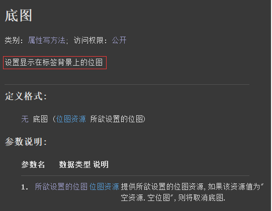
代码编写如下图：
1、通过“标题”属性可以设置标签的标题信息。
2、定义一个类型为“位图资源”的常量值，并引用一个图片。
3、最后调用“底图”属性设置本图片即可。
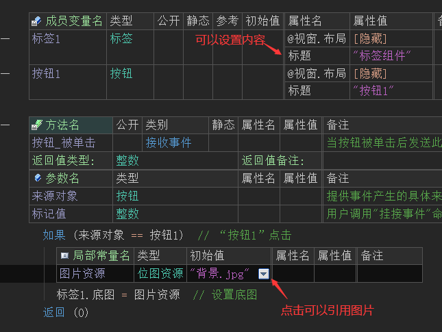
运行效果如下图：
最终可以看到标签增加了一个背景图。
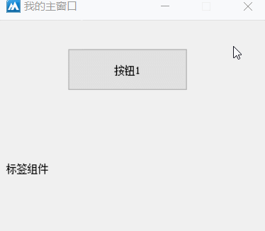
● 底图方式(写)
帮助文档如下图：
通过本属性可以设置标签组件背景图的缩放方式。
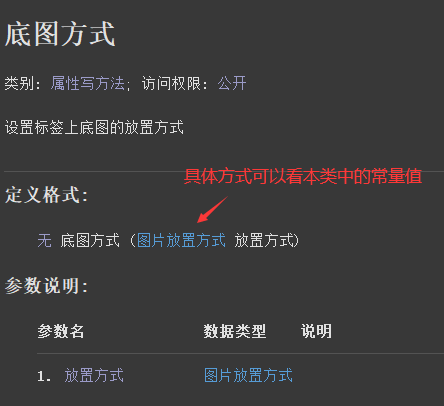
代码编写如下图：
按钮点击后调用“底图方式”属性设置为“图片放置方式.缩放图片”。
这个属性值的意思表示，将图片缩放到和组件尺寸一致。
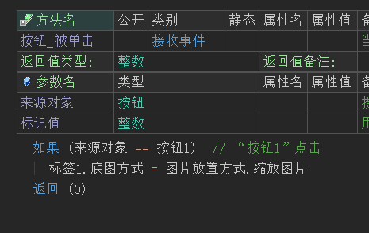
运行效果如下图：
最终可看到标签的底图会被缩放到和图片尺寸一致。
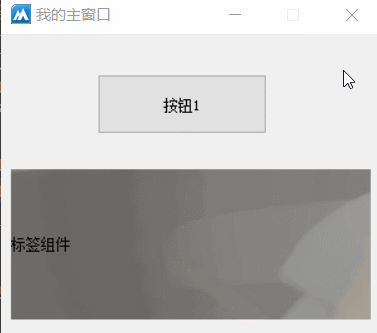
● 文本颜色(写)
帮助文档如下图：
通过本属性可以设置标签的文本颜色。
可以使用“颜色类”中定义的常量值，或者使用“0x0000FF”十六进制颜色值。
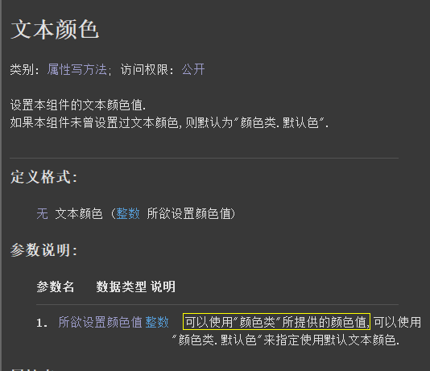
代码编写如下图：
按钮点击后调用本属性设置为红色。
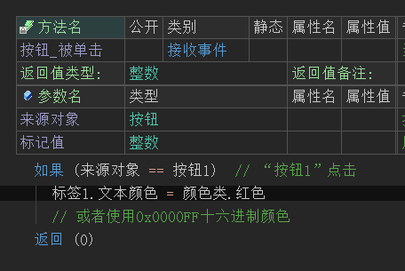
运行效果如下图：
最终标签的文本颜色将会转换成红色。
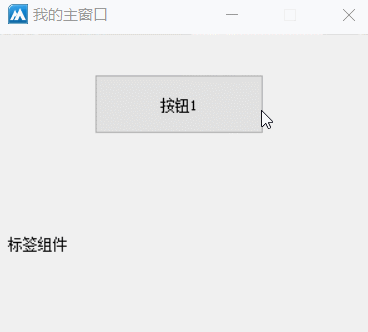
● 是否自动折行(写)
帮助文档如下图：
通过本属性可以设置标签的标题是否进行自动折行。
如果不设置本属性，则标签组件默认是单行显示，只有将本属性设置为真，标签的标题才能多行显示。
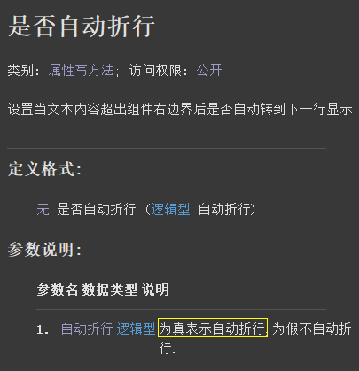
代码编写如下图：
1、首先给标签组件设置一大段文本。
2、按钮点击后调用本属性设置为真。
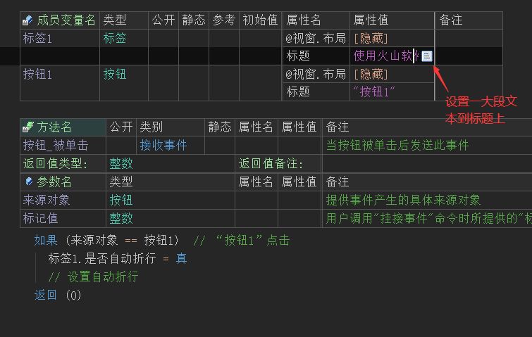
运行效果如下图：
最后可看到标签的标题变成了多行显示。
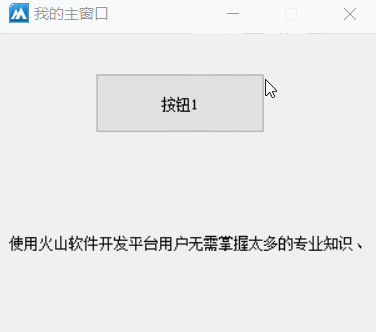
● 背景颜色(写)
帮助文档如下图：
顾名思义通过本属性可以设置标签的背景颜色。
属性值可以提供“颜色类”中的常量值或使用“0x0000FF”十六进制颜色值。
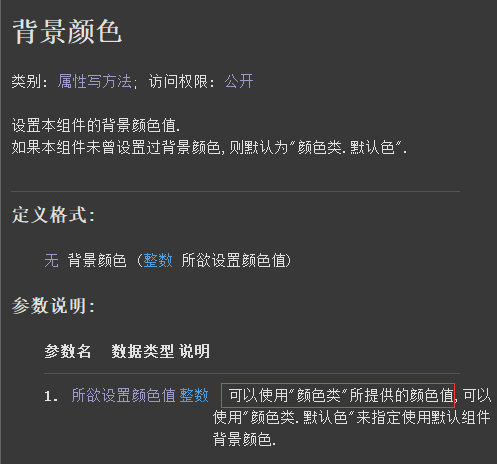
代码编写如下图：
按钮点击后设置背景色为红色。
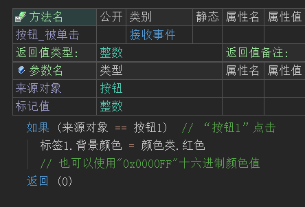
运行效果如下图：
最终标签背景色会变成红色。
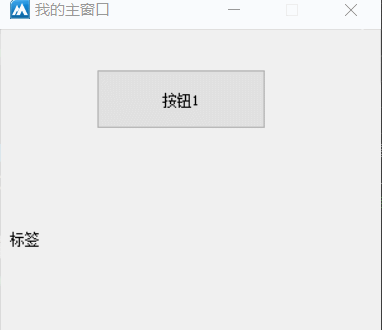
● 横向对齐方式(写)
帮助文档如下图：
通过本属性可以设置当前标签内文本的对齐方式。
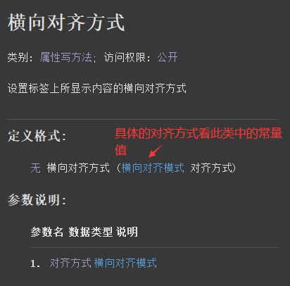
代码编写如下图：
按钮点击后调用本属性设置为“横向对齐模式.右边”，表示标题文本右对齐。
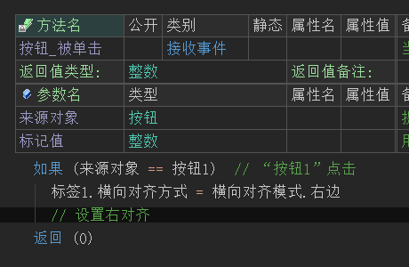
运行效果如下图：
最终可看到标题文本进行了右对齐。
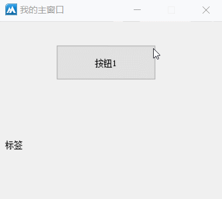
● 纵向对齐方式(写)
帮助文档如下图：
通过本属性可设置标题文本的纵向对齐方式，属性值为“纵向对齐模式”中的常量值。
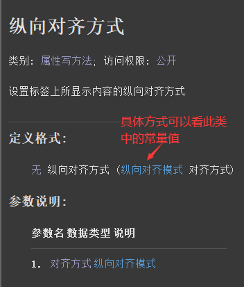
代码编写如下图：
按钮点击后设置本属性值为“纵向对齐模式.底边”，表示标题文本对齐到组件底边。
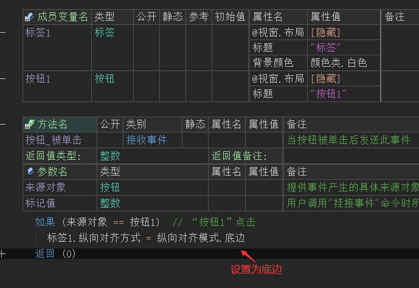
运行效果如下图：
最终可以看到标签进行了底部对齐操作。
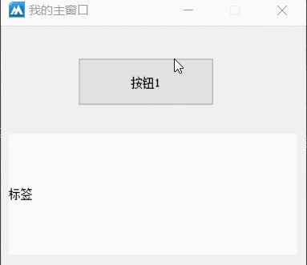